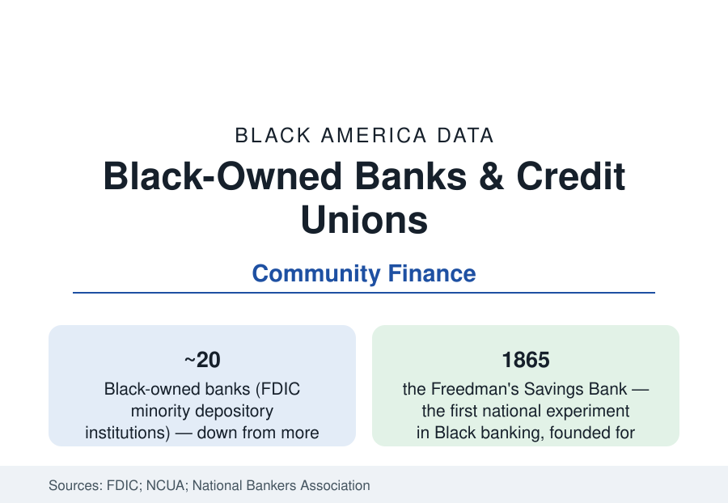

Black Business
Black-Owned Banks and Credit Unions: The Community Finance Infrastructure
About twenty Black-owned banks and several hundred Black-led credit unions hold the community-finance layer of the Black economy. The FDIC and NCUA data.

About twenty Black-owned banks operate in the United States today, together with several hundred Black-led credit unions — a community-finance infrastructure that is small against the banking system's scale and outsized in the Black economy's history and daily function. The FDIC's minority depository institution (MDI) data count the banks; the credit union regulator's minority designations count the cooperatives; and the trend lines in both series describe contraction in number alongside growth in mission. This article reports the data on Black America's own financial institutions.
The Banks: Twenty Institutions, a Long Lineage
Black banking begins nationally with the Freedman's Savings Bank of 1865, chartered for the formerly enslaved, whose failure in 1874 — deposits of some 60,000 Black families lost — shadowed Black finance for generations. The modern industry grew from the community banks of the segregation era: Mechanics and Farmers Bank in Durham (1907), Citizens Trust in Atlanta (1921), Broadway Federal in Los Angeles (1946), Industrial Bank in Washington (1934), Carver Federal in Harlem (1948), and their peers — institutions that lent inside the red lines when no one else would. The FDIC's MDI list counts the survivors and successors at roughly twenty Black-owned banks in recent years, holding combined assets in the single-digit billions — against a national banking system measured in the tens of trillions. The largest, OneUnited Bank (formed by merger of Black banks in Boston, Los Angeles, and Miami), holds assets in the high hundreds of millions; most of the twenty are community banks of under $500 million, lending in the metros this reference profiles.
The Credit Unions: The Wider Net
The cooperative layer is broader. The NCUA's minority credit union designations number in the several hundreds nationally, a large share of them Black-led and Black-serving: church-founded credit unions, municipal-employee cooperatives, and community charters that form the most widely distributed Black financial infrastructure in the country — in many smaller Black communities, the credit union is the only Black-controlled financial institution present. Their aggregate assets exceed the Black banks', their membership runs into the millions, and their lending (auto, small consumer, and increasingly small business and mortgage credit) is the daily finance of the neighborhoods the banks cannot reach. The data limitation is real: the minority designation is self-reported by majority membership or board composition, so counts carry a margin the regulator itself notes.
Contraction and the Consolidation Question
The banks' count has fallen from more than fifty around the turn of the century to about twenty — the product of failures in the financial crisis (several storied Black banks closed or were absorbed in its aftermath), mergers, and the industry's general consolidation, compounded by the economics of small-bank regulation. The research literature on the contraction weighs two readings: capacity loss (each closed bank removes local lending relationships and a training ground for Black bankers) against scale necessity (sub-scale banks cannot fund the technology and compliance modern banking requires). The pandemic era complicated the trend line: several Black MDIs received large deposits and capital attention in 2020-2021 — including corporate deposit pledges and federal emergency capital program investments directed partly through minority institutions — measurably swelling the survivors' balance sheets and lending, an injection the subsequent data track as it seasons.
What the Institutions Do Differently
The functional case for the sector is in the lending data. The research on MDIs (including studies by the National Bankers Association and academic analyses of the FDIC data) finds that Black-owned banks lend in majority-Black neighborhoods at substantially higher rates than comparably sized non-minority banks — originating mortgages and small-business credit inside the communities where the financing-access article's approval gaps originate. Their deposit franchises are correspondingly concentrated and loyal, and their survival economics depend on the proposition that relationship lending in underbanked markets is a business, not a charity — a proposition their best performers' returns support and their failures complicate. The digital era cuts both ways in the data: the largest Black banks now gather deposits nationally online, decoupling the franchise from a single city's footprint for the first time in the sector's history.
Reading the Community Finance Data
Twenty banks and several hundred credit unions are, in system terms, a rounding error — and, in community terms, the financial layer Black America owns outright. The reference position is to track both facts at once: the sector's smallness is the measure of the capital history behind it, and its lending pattern is the standing evidence of what the capital is for.
More in Black Business
Black-Owned Businesses: Counts, Receipts, and the Representation Gap
About 161,000 Black-owned employer firms and three million solo ventures: how the Census Bureau counts Black business ownership, where firms concentrate, and the gap between population share and business share.
Black Median Net Worth: The Wealth Gap in Federal Reserve Data
The Federal Reserve puts Black median family net worth at $44,900, against $285,000 for White families — about 16 cents on the dollar. The widest gap in economic data.
Black Buying Power: The $1.8 Trillion Consumer Economy
Black buying power is estimated at about $1.8 trillion — larger than the economy of most nations. What the figure measures, who produces it, and what it buys.
Source: FDIC Minority Depository Institutions program data; National Credit Union Administration; National Bankers Association research.